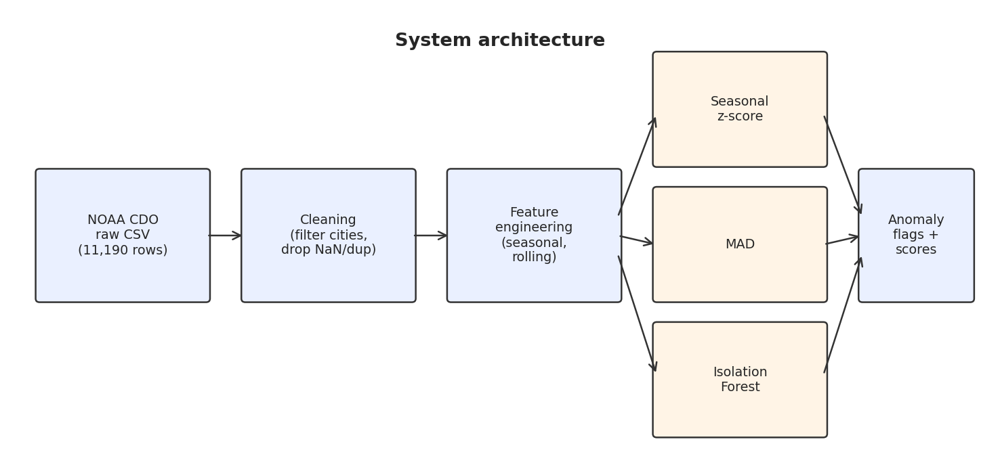

Gunn Madan & Harini Mohan · Department of Computer Science, Georgia State University
We built a Python pipeline that ingests ten years of NOAA Climate Data Online daily weather observations for Chicago, New York, and Los Angeles, then flags unusual days using three unsupervised detectors: a seasonal z-score, a robust MAD detector, and an Isolation Forest. All three are trained on 2016 to 2022 and evaluated on 2023 to April 2026 under the same time-based split. This page is a live demo that reads the exact same model output that appears in our final report, so you can click around and see what each detector flags for any city and variable.
Everything below is pre-computed from the same pipeline that produced the IEEE report. No server, no Python running in the browser, just static data generated by src/run_pipeline.py.

Pick a city, variable, and detector. The chart updates instantly and shows every flagged day as a crimson dot.
Highest-magnitude seasonal z-score anomalies. These are the days each detector cares most about.
| Date | Value | z | Notes |
|---|
How often do pairs of detectors agree on the same day being an anomaly? Low numbers mean the methods surface fundamentally different events rather than redundant ones.
What we see: Z-score and MAD overlap at around 0.26 on TMAX because they both model seasonal deviation and only differ in their scale estimator. Isolation Forest agrees with either at roughly 0.05 because it ranks points by their position in the joint (TMAX, TMIN, PRCP, temp_range, rolling_mean) feature space, not by deviation from a per-day-of-year baseline.
Fraction of days flagged per year, per city, per method. The sharp rise after 2022 is visible across every combination.
No single detector wins on every variable. Isolation Forest is sharpest on precipitation, seasonal z-score is most aggressive on temperature recall, and MAD is the most conservative of the three. Detectors disagree strongly, which means they surface complementary notions of the word "anomaly," and a sensible production deployment would treat them as an ensemble rather than picking one. The sharp post-2022 rise in anomaly rates holds across every city and every method, which is consistent with the run of extreme-weather years we have actually lived through.